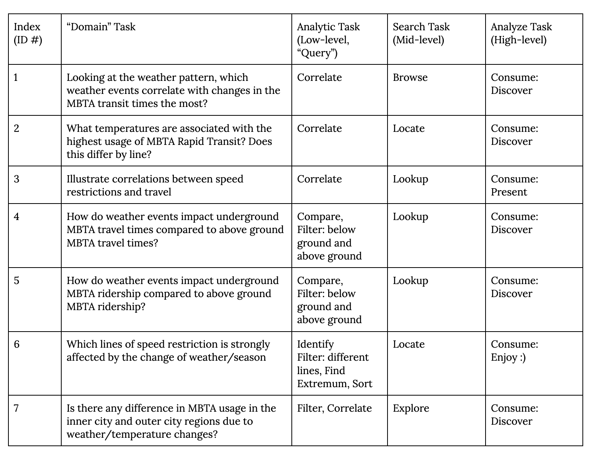

Project Team #: Topic, COSI 116A F23
Cindy Chi, Christina Lin, Sydney Cohen, Vu Le
Project-long Course Project as part of COSI 116A: Information Visualization, taught by Prof. Dylan Cashman, Brandeis University.
Motivation
In the beginning, our group chose an MBTA ridership dataset and wanted to look at the relationship between weather events and certain MBTA ridership. We started off with the goal of looking at how the 2022 MBTA Transit data changes with respect to month, season, and/or precipitation. Because the seasonal weather changes can be so drastic in Boston, especially with the cold and icy weather in the winter, we predicted that there would be some correlation between the number of people riding the MBTA and the month, season, and precipitation data. Creating visualizations that compare ridership to weather data would allow viewers to better understand how ridership relates to months, seasons, and precipitation. Additionally, it is crucial to understand factors that impact ridership in evaluating the accessibility and usage of the T, and also when looking at what changes can be made in the future to best offset seasonal and weather impacts, if needed.
Visualization
Ridership and Precipitation by Month 2022:
MBTA Rail Ridership by month:
Monthly total precipitation (inches):
Demo Video
Embedded MP4 demo video using the HTML5 <video> tag. For example, this screen recording Prof. Cody Dunne made of Mike Bostock's flexible transitions in D3 slide:
Visualization explanation

Final visualization screenshots (PNG images), design justifications, UI walk-through, and linked presentation slides.
Data Analysis
We started by taking the MBTA MBTA Monthly Ridership by Mode and Boston Weather Summary of the Month dataset We then filtered both of these datasets, starting by checking for missing data, and then selecting the data for January to December of 2022. For the MBTA Rail Ridership dataset, we specifically filtered for the mode to be Rail, since the data set also includes other modes of transportation like bus, ferry, and commuter rail. Because the Boston weather data also started out in pdf format, we manually put the total monthly precipitation values into a sheet with the month names, and then converted this to a json file. We were then able to take the datasets and use the month names to correlate the two variables. This allowed us to take the numerical precipitation and ridership data and then put it into our visualizations, including inputting them into line and bar graphs, a pie chart, and a table. It is important to note that the precipitation data set is missing the data for December, which meant that the water level visualization to specifically check for None values when evaluating the dataset. Additionally, we had to adjust the y-axis on the ridership bar graph in order to make the data show up for the month of January.
Task Analysis
Our visualization was primarily developed for consumption, especially allowing users to discover the way that weather events and month correlate with changes in MBTA ridership. We planned on having some parts that are more focused on presenting information as well, which would allow users to view information about speed restrictions, but we chose to cut this out in the end. This would have been more useful when looking at MBTA Rapid Transit times, since speed restrictions can impact both speed and ridership as well. However, because we did not end up looking at MBTA travel times, we also eliminated any analysis of speed restrictions. Our original task table is shown above.
Overall, we wanted to allow users to better understand how recent weather patterns align with MBTA usage. In
the end, we decided to focus on a variation of our original task number 2, replacing temperature with
precipitation. We decided to look at Boston’s total monthly precipitation, rather than temperature, but still
wanted to answer the same question of what weather is associated with the highest MBTA ridership, and weather it
differs by line. This task started with the analytic task of filtering the data for ridership by line, and also
correlating the precipitation and ridership data from multiple datasets. The search task was lookup, since we
had the given months that we wanted to get the total monthly precipitation and the ridership for individual MBTA
rail lines. For the analyze tasks, we focused on discovery, allowing users to look at our various linked
visualizations to look at the data for individual months, or for groups of months.
The intended audience that we hope to reach is the people who run and manage the MBTA Rapid Transit
system, since it is important for them to understand how their staffing and engineer needs (run more trains,
deal with trains breaking down, help manage high traffic times within the stations) must change based on the
weather. We also hope that our visualization is useful for MBTA Rapid Transit riders, since they may better
understand when the T will be more or less crowded depending on the weather. Thus, the primary consumers are
the public and MBTA employees.
Sketches and design choices to justify final visualization. After some data wrangling and visualization techniques, we were able to display a table showing the
MBTA's 2022 ridership by month, a pie chart for a breakdown of the months' ridership by line, a water level
visualizer, a line chart for precipitation by month, and a bar chart representation of ridership by month.
Some technical issues we ran into was trying to overlay a line graph over the bar chart. Although it wasn’t
necessary to display the line graph, as the purpose of the feature was also represented by the total
precipitation visualization, having the two graphs overlaid would have made it easier to look at whether
there is any correlation between total ridership and total monthly precipitation. After evaluating our
various visualizations, we cannot state that there is a correlation between total monthly precipitation and
ridership. However, our displays do allow users to better understand how MBTA ridership differs by season
and month, and also how precipitation in Boston varies by month. If we had more time to hone in on our
skills, we could successfully incorporate the line graph. We could also add in more details to our
visualizations to improve its aesthetic. We could incorporate a weather-like or MBTA-like theme for our
page, and we could find a way to make our various visualizations more interconnected. Going forward, if we
were to improve our current project, we would take all of these considerations into mind. Data-wise, we
could also look for other variables and related datasets to further investigate the relationship between
weather and MBTA. For instance, taking temperature, rain, the timing of sunrise and sunset, snow, or other
major weather events into account would allow us to further examine the relationship between weather and
MBTA usage. Additionally, it is important to recognize that there are many other variables that affect
ridership and could be considered, such as social events, like the end of a concert nearby, big city events,
or lockdowns. List here where any code, packages/libraries, text, images, designs, etc. that you leverage come
from.
Design Process


Conclusion
Acknowledgments
{kind=link}